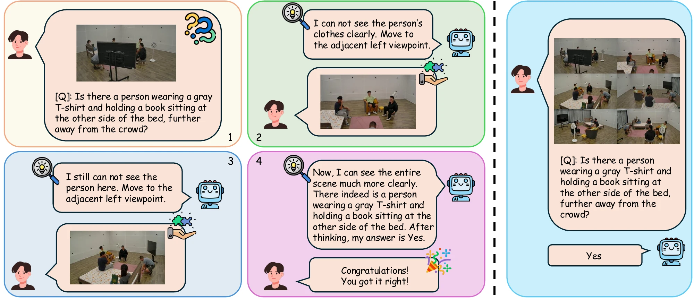
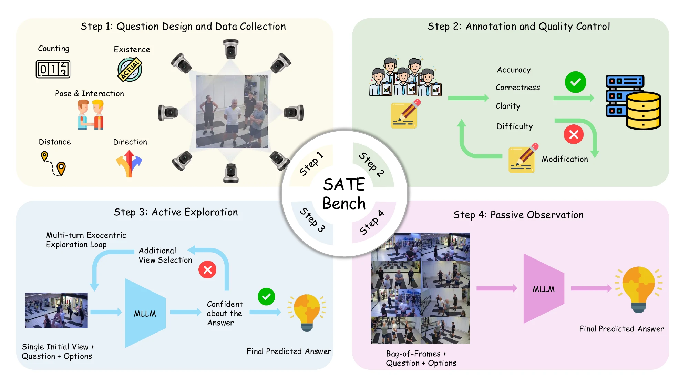
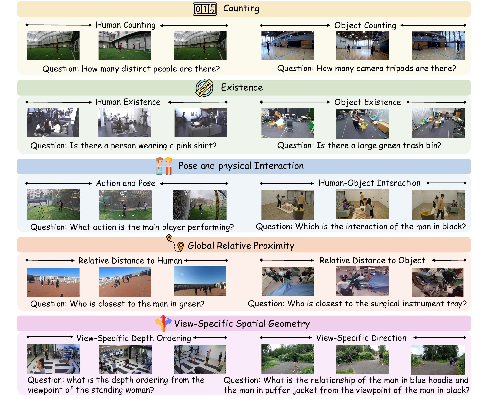
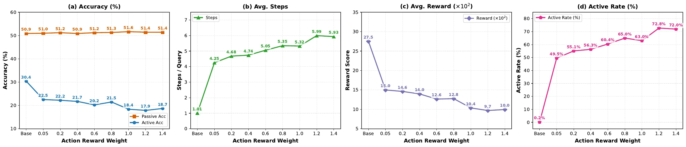

69.2 → 56.8
Passive–Active gap
Gemini-3.5-flash fuses static views well (69.2% Passive accuracy) but drops to 56.8% when it has to gather the views itself.
python3 -m http.server 8000 in the root of the site repository and open http://localhost:8000/SATE-Bench/,
or view it on GitHub Pages.

While Multimodal Large Language Models (MLLMs) excel at zero-shot reasoning, their spatial capabilities are primarily evaluated through static, passive observation. In complex, human-centric scenes, occlusion often hides crucial geometric evidence, and passive benchmarks force models to guess rather than recognize their own visual uncertainty. To bridge this gap, we introduce SATE-Bench, a novel interactive benchmark comprising 316 real-world scenes and 2,525 multi-turn QA pairs to evaluate visual self-awareness and active exocentric view-exploration. It combines a Passive multi-view control with an Active exploration setting, where models start from a severely occluded view and must iteratively query adjacent viewpoints until they gather enough evidence to fully “sate” the question, scored by a step-penalized efficiency reward. Evaluating state-of-the-art MLLMs reveals that they terminate exploration prematurely while reporting high confidence, and struggle with fine-grained 3D geometric tasks; matched-view controls further attribute the Active–Passive gap primarily to insufficient evidence acquisition. Moreover, fine-tuning with Group Relative Policy Optimization (GRPO) shows that rewarding view-seeking increases active exploration but lowers overall accuracy, as models over-explore and fail to fuse expanding multi-view contexts across turns. These findings indicate that scaling passive multi-view perception does not intrinsically yield active spatial reasoning, highlighting the need for models that know where to look, how to integrate what they see, and when to stop.
Interactive demo
You start where the model starts: one view of the scene. Move around the cameras until you are confident, then answer. Every extra view lowers the reward by a factor of e−0.1. Try the scene from Figure 1 or one benchmark question for each of the ten tasks, then see whether you answered correctly and how your path compares with the models'.
Tip: click the demo, then use the ← and → keys to move between views. Click the image or to inspect the current view at full resolution; zooming does not count as a view.
Benchmark
We source dense, synchronized 360° multi-view captures from ten human-centric datasets, sort the views clockwise around each scene, and annotate challenging multiple-choice questions.

| Dimension | Task | # QA |
|---|---|---|
| Entity Counting | Human Counting | 308 |
| Object Counting | 232 | |
| Entity Existence | Human Existence | 203 |
| Object Existence | 218 | |
| Pose & Physical Interaction | Fine-grained Action and Pose | 301 |
| Human-Object Interaction | 165 | |
| Global Relative Proximity | Relative Distance to Human | 508 |
| Relative Distance to Object | 334 | |
| View-Conditioned Geometry | View-Specific Depth Ordering | 124 |
| View-Specific Direction | 132 |

Results
Average accuracy in the Passive and Active settings, together with the exploration behaviour in the Active setting. Every model loses accuracy when it has to explore on its own.
| Model | Passive Acc (%) | Active Acc (%) | Δ | Avg. Steps | Active Rate (%) |
|---|---|---|---|---|---|
| Human | – | 82.7 | – | 4.7 | 88.1 |
| Random Guess | – | 24.8 | – | 1.0 | 0.0 |
| Proprietary models | |||||
| Gemini-3.5-flash | 69.2 | 56.8 | −12.4 | 2.5 | 80.5 |
| Gemini-3.1-flash-lite | 62.6 | 38.0 | −24.6 | 1.5 | 24.8 |
| Gemini-2.5-flash | 58.5 | 45.4 | −13.1 | 1.9 | 41.2 |
| Gemini-2.5-flash-lite | 45.1 | 28.1 | −17.0 | 1.6 | 20.6 |
| GPT-5.2 | 63.0 | 46.4 | −16.6 | 1.7 | 58.1 |
| GPT-5-mini | 64.6 | 41.4 | −23.2 | 1.4 | 29.4 |
| GPT-5-nano | 55.4 | 38.0 | −17.4 | 1.3 | 17.6 |
| Open-source models | |||||
| Qwen2.5-VL-3B-Instruct | 50.9 | 30.4 | −20.5 | 1.0 | 0.2 |
| Qwen2.5-VL-7B-Instruct | 54.9 | 29.8 | −25.1 | 1.0 | 0.4 |
| Qwen3-VL-8B-Instruct | 55.6 | 30.7 | −24.9 | 1.6 | 15.6 |
| Qwen3-VL-8B-Thinking | 57.7 | 29.8 | −27.9 | 1.1 | 5.8 |
| Qwen3.5-9B | 56.9 | 36.7 | −20.2 | 1.1 | 4.1 |
| Gemma-3-4B-it | 40.2 | 31.0 | −9.2 | 1.1 | 3.3 |
| LLaVA-OneVision-2-8B | 58.9 | 36.1 | −22.8 | 1.0 | 0.0 |
Δ = Active − Passive accuracy. Bold marks the best model in each setting. Per-task results are reported in the paper.
Findings
The 15 findings of the paper, grouped by the evaluation setting in which they are observed.
69.2 → 56.8
Gemini-3.5-flash fuses static views well (69.2% Passive accuracy) but drops to 56.8% when it has to gather the views itself.
2.5 vs. 4.7
Humans explore in 88.1% of the questions and observe 4.7 views on average; the most exploratory model observes only 2.5.
31.9%
Gemini-3.5-flash handles entity queries reasonably well (68.2% on Object Existence) but falls to 31.9% on Human-Object Interaction and 32.2% on View-Specific Depth Ordering.
2.8 h → 9.4 h
Exploring raises the total inference time of Gemini-3.5-flash from 2.8 hours (Passive) to 9.4 hours (Active), as the multi-view context grows with every step.
0.0–15.6%
Open-source models almost never move: their Active rates range from 0.0% to 15.6%, and their Active accuracy stays at 29.8–36.7%.
5.8% vs. 15.6%
Qwen3-VL-8B-Thinking beats its Instruct version in the Passive setting (57.7% vs. 55.6%), but in the Active setting it explores less (5.8% vs. 15.6% active rate) and takes over 20 hours.
Five controlled variants of the evaluation isolate what limits the models: what they can see, how they may move, how the views are presented, and how confident they are.
Models answer from the initial occluded view only, without any exploration.
≤ 39.6%
With only the initial view, no model exceeds 39.6% accuracy, and the compact GPT-5-mini (39.6%) even edges out GPT-5.2 (37.3%).
At every step, models may move one or two views to either side (±1 or ±2) instead of only to the adjacent view.
45.4 → 45.7
Allowing moves of ±2 views barely changes accuracy (Gemini-2.5-flash: 45.4% → 45.7%): the bottleneck is recognizing uncertainty, not the action space.
35.3 → 38.0
With ±2-view moves, the average reward of Gemini-2.5-flash rises slightly (35.3 → 38.0), as it can skip redundant intermediate views.
The views a model collected during Active exploration are given back to it passively, in the same order.
38.0 vs. 40.3
With the same views, Gemini-3.1-flash-lite reaches almost the same accuracy (40.3% vs. 38.0%): the gap comes from gathering too little evidence.
All Passive views are given as a single video instead of separate images.
62.6 → 57.6
Accuracy drops for Gemini-3.1-flash-lite (62.6% → 57.6%) and GPT-5-mini (64.6% → 63.7%): discontinuous camera views do not form a natural video.
Models report a confidence score (0–100%) together with every action.
95.1%
Gemini-3.1-flash-lite reports 95.1% confidence at its final step while answering only 37.3% correctly (GPT-5-mini: 84.7% vs. 41.4%).
Qwen2.5-VL-3B-Instruct is fine-tuned with GRPO on 19.3K single-view samples, varying the action reward that encourages exploration from 0.05 to 1.4.
0.2% → 72.8%
GRPO raises the active rate of Qwen2.5-VL-3B from 0.2% to 72.8% and its average number of observed views from 1.0 to 6.0.
≈ 51%
The Passive accuracy of the base model and every GRPO-tuned model stays at about 51% (50.9–51.6%), so multi-image fusion is preserved.
30.4 → 17.9
Stronger action rewards lower Active accuracy from 30.4% to 17.9%: the model moves more without learning when to stop or how to fuse the views.
Failure cases
For most models, over 70% of Active errors happen at the start view, without a single move. Models that do explore stop before reaching the decisive view or fail to combine evidence across views. In the Passive setting, models under-count, accept partial attribute matches and confuse frames of reference.
Q: How many unique human individuals are present in the entire scene across all given views? Answer: 2
Gemini-3.5-flash (V2): “Typically, these scenarios focus on a single participant […] exploring other views seems unnecessary.”
A second person, seated at a desk in the far corner, is visible only from V3 and V4. The model replaces visual verification with a prior about the source dataset; a single move to V3 would reveal the second person.
Q: Is there a red plastic fuel container located on the floor between the two participants and the central cardboard boxes? Answer: Yes
Gemini-3.5-flash (V4): “I am sure, if it was there, I would see it. […] that space is completely visible and empty.”
From V4 the container is hidden behind the tall box and the participants; in V1 and V3 it is clearly visible. The model wrongly judges the region to be fully observed, which is exactly the self-assessment the Active setting probes.
Q: Which person is standing closest to the man wearing the red shirt behind the wooden counter? Answer: The person in the lavender shirt near the background racks
Gemini-3.5-flash (V1): “If there's no red-shirted guy anywhere, then C is the answer. […] No space for someone to be behind it!”
Both persons are outside V1 (red shirt in V4, lavender shirt in V3). The model notices that the referent is missing but declares the question unanswerable instead of exploring, whereas Gemini-2.5-flash explores from the same observation. Abstaining at the start view causes 25–57% of the errors of the weaker models.
Q: Is there an open black equipment case on the floor near the glass door? Answer: Yes
Gemini-3.5-flash: (V1) “there's this black equipment case – it's open […] Where is the glass door?” (V2) “No black case. Just cables.”
The case is visible in V1 but the door is not; both appear together only in V3, one step in the opposite direction. The model finds the object, keeps moving away from the view that relates it to the landmark, and forgets the earlier sighting at V2. Partial exploration accounts for 65% of Gemini-3.5-flash's and 55% of GPT-5.2's errors.
Q: How many unique real people are present in the gym space from all given views, including those partially visible or in reflections? Answer: 7
Gemini-3.5-flash (V2): “this ‘new’ person (in the reflection) has black shorts […] I will now identify as Person 8.”
Gemini-2.5-flash (V2): “the two ‘reflection-only’ figures from View 1 are directly visible in View 2, meaning those are not unique individuals.”
Both Gemini models observe the same two views. The mirror wall duplicates most participants; Gemini-3.5-flash re-identifies people by a single clothing cue and counts a reflection as an extra person, while Gemini-2.5-flash matches it to a directly visible person. Here the bottleneck is cross-view integration, not exploration.
Q: Regarding the interaction between the player's right foot and the soccer ball, which description is most accurate based on the synchronized views? Answer: No contact; the foot is hovering just beside the ball
Gemini-3.5-flash: “Image 1: Right foot is on the ball. […] Image 5: Right foot is on the ball. […] D & E) Not likely. There is contact.”
The two close-ups (Img 1 and Img 4) show both feet on the turf beside the ball. The model asserts a stereotyped pose first and then “confirms” it in every view, including distant ones where the foot covers only a few pixels.
Q: From the perspective of the man sitting in the blue T-shirt, what is the 3D spatial relationship of the standing wrestler relative to the grounded wrestler's torso? Answer: In front, left, above
Gemini-2.5-flash: “From the observer's perspective, the grounded wrestler's torso is on the left side of the scene, and the standing wrestler is to the right.”
The observer (yellow box) faces the camera, so his frame is rotated by about 180° relative to V1. The model's answer is correct in the camera's frame; for the observer, the depth and lateral components flip. The model claims to take the observer's perspective but reads left/right and depth directly off the image.
Q: Is there a man wearing a grey hooded sweatshirt and a black baseball cap, looking to his right and standing directly behind the two marimba players? Answer: No
Gemini-3.5-flash: “His hoodie's possibly dark grey but looks like black in Image 2. […] this seems to be the closest match.”
The man behind the players (Img 3) wears a black cap but a dark navy sweatshirt; a man in grey without a cap stands next to him. The question mixes attributes of two people. The model notices the mismatch but accepts the closest match instead of rejecting it, the typical form of the 76% false-positive existence errors.
Q: How many white robotic arms are installed on the workbenches in the space? Answer: 2
Gemini-3.5-flash: “The positioning suggests it could be the same workbench. […] Same workbench. Same arm.”
The room has two arms on adjacent workbenches; Img 1 and Img 2 each show a different one (V4, not given as input, shows both). The model identifies the real question, whether the two sightings are the same instance, but decides it from generic context that fits both benches. Such over-merging explains why under-counts are twice as frequent as over-counts.
start view visited (numbered in visit order) or given as input not visited or not given decisive evidence reference person Click the views to enlarge them.
Training
We fine-tune Qwen2.5-VL-3B-Instruct with Group Relative Policy Optimization on 19.3K single-view samples (a 1:1 mix of Active and Passive decisions) from M3GYM and Ego-Exo4D training scenes. The reward combines accuracy, format and an action term that encourages exploration.

@misc{guo2026humansspacemllmsconstruct,
title={Humans in Space: Can MLLMs Construct Human-Centric Spatial Understanding via Active Exocentric Exploration?},
author={Tianchen Guo and Tengyue Zhang and Chen Liu and Ling Chen and Xin Yu},
year={2026},
eprint={2610.34149},
archivePrefix={arXiv},
primaryClass={cs.CV},
url={https://arxiv.org/abs/2610.34149},
}
SATE-Bench is built on M3GYM, Harmony4D, HOI-M3, MvMHAT, core4D, 4D-OR, MM-OR, Replay, EgoHumans and Ego-Exo4D. We thank their authors for making the data available.
The code is released under the Apache License 2.0. The SATE-Bench annotations and data (questions, options, answers, view selections and released frames) are released under CC BY-NC 4.0 and must be used for non-commercial purposes only. Frames from the source datasets, including the images shown on this page, remain subject to the original licenses of those datasets.